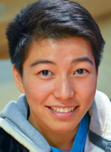

About AceAPs Relevance and founders
Our Cause
It all started out with us wondering if hospitals had legitimate ways to ask for help from and share resources with other hospitals. Doing further research, we saw immense disparities in many states amongst low and high income communities. Surely there could have been a way to at least shift this disparity a little in a positive direction... thus Healthshare was born! Below you can see the data pointing to just some of the disparities of a couple of states. This data was collected and displayed in this format by the National Healthcare Quality and Disparities Reports (AHRQ).
Our Philosophy
We believe that unused resources can be put to great use in one of the most important projects of life: preserving it. Of course, we are just a medium- it is up to the good will of our users to share, donate, and communicate with one another to make treating patients much easier. We look forward to a future in which our places of treatment stand strongly amongst one another.
Founders
AceAPs was developed by an undergraduate student at Columbia University and a sophomore student at Ward Melville high school.
-
-
